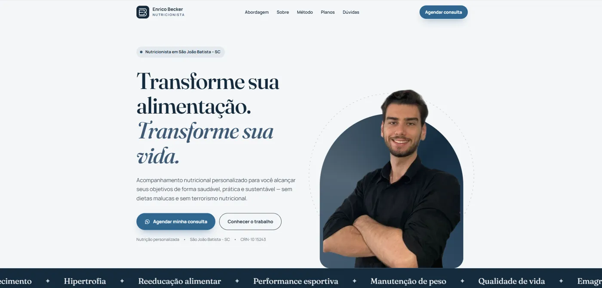
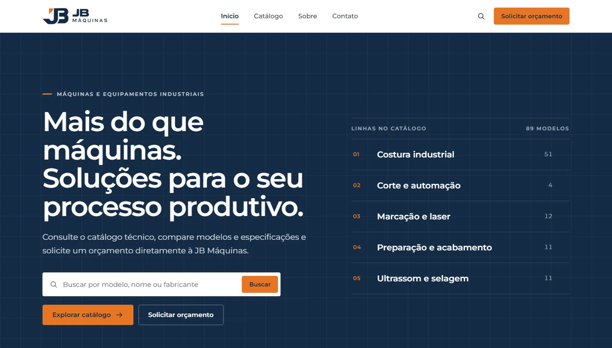
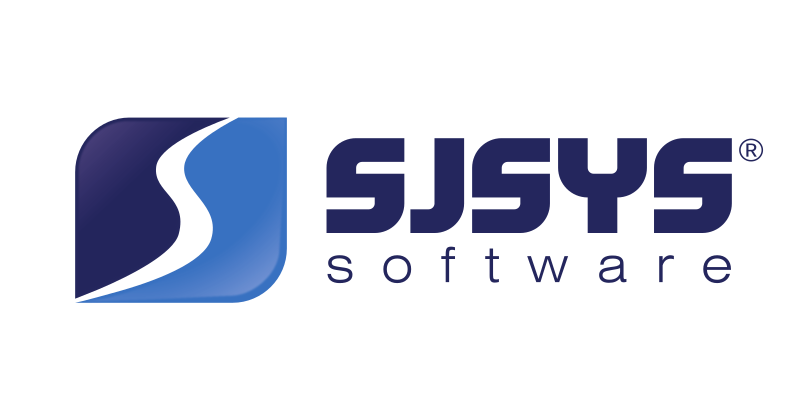

GHF-2026
100×60mm · 203dpi
- Nome
- Gustavo H. Fraga
- Função
- Analista de Suporte de Sistemas
- Curso
- Sistemas de Informação
- Foco 2026
- Cloud & Segurança
- Idiomas
- PT · EN intermediário
- Status
- Aberto a oportunidades
~/analista-de-suporte
Suporte de sistemas, infraestrutura
e desenvolvimento web.
Analista de Suporte de Sistemas na Tutor Software e graduando em Sistemas de Informação pela UNIFEBE. No dia a dia, resolvo chamados, mantenho estações de trabalho e faço a ponte entre o usuário e o sistema. Fora dele, desenvolvo aplicações web com Next.js, TypeScript e Supabase. Em 2026, o foco é identidade, infraestrutura e cloud no ecossistema Microsoft.
Atendimento presencial e remoto, gestão de chamados, configuração e manutenção de estações de trabalho.
Sites para clientes e sistemas com Next.js, React, TypeScript, Supabase, FastAPI e Java.
Identidade com Microsoft Entra, Active Directory, fundamentos de Azure e segurança da informação.
01 / em produção
Sites e sistemas feitos sob encomenda para empresas reais: briefing, desenvolvimento, publicação e manutenção.
Imobiliária · Santa Catarina case de sucesso
Plataforma completa da imobiliária: catálogo de imóveis com filtros e mapa, páginas por imóvel otimizadas para o Google e um painel onde a equipe gerencia tudo sozinha.

Nutricionista · São João Batista, SC
Site profissional para atrair e converter pacientes: apresentação, método de trabalho, planos e dúvidas frequentes, com o agendamento pelo WhatsApp sempre a um clique.
Crochê artesanal · loja online
Catálogo com carrinho: a cliente monta o pedido, ele é gravado no banco e enviado direto para o WhatsApp da loja. A Solange cadastra peças e fotos e acompanha os pedidos num painel próprio.

Máquinas industriais · catálogo técnico
Site institucional e catálogo técnico-comercial com 89 modelos importados automaticamente da fabricante, página estática por produto e pedido de orçamento com backend próprio.
02 / roadmap
Plano de certificações Microsoft para este ano, de identidade e diretório até cloud e segurança.
stage 01
Applied Skills
Identidade e acesso: usuários, grupos, autenticação e acesso condicional no Entra ID.
stage 02
Applied Skills
Administração do AD DS: domínios, unidades organizacionais, GPOs e contas.
stage 03
Azure Fundamentals
Conceitos de nuvem, serviços principais do Azure, governança, custos e SLAs.
stage 04
Security Fundamentals
Segurança, conformidade e identidade: Zero Trust, Defender, Purview e Entra.
03 / código
Sistemas desenvolvidos na faculdade, no trabalho e por conta própria. Os marcados como online estão no ar.
Painel web do app Laço's — Minha Saúde Feminina: gestão de conteúdos educativos, configurações do site, listagem de usuárias e relatórios com dados anonimizados.
/adminis_admin no banco antes de renderizarResolve um problema real da indústria calçadista: converte fotos de calçados em desenho técnico pronto para impressoras térmicas Argox, em lote.
API Java com pipeline no GitHub Actions: build, análise de segurança e imagem Docker publicada no GHCR. Disciplina de Segurança da Informação, com Carlos A. Gatis.
Sistema para ONG de proteção animal: catálogo com filtros, formulário de adoção, doações, notícias e painel administrativo. Curricularização 2025.
Dashboard de gestão de clã integrado à API oficial da Supercell: membros, guerras e desempenho de ataques.
Controle de reservas e uso de quadras com Flask, templates Jinja e SQLite.
Geração de carteirinhas de identificação pela web.
Aplicação de registros construída com React e Vite.
| 2025 | AttWeather | Consumo da API do OpenWeatherMap | JS |
| 2024 | FragaTiras | Primeiro site institucional para empresa | HTML |
| 2024 | PingPongGame | Jogo responsivo com melhorias sobre o curso DEV Samurai | JS |
| 2024 | AnalisandoIPs | Análise de endereços IP · Programação 1 | Java |
| 2024 | GuanabaraCourse1 | Projeto do Curso em Vídeo | HTML |
| 2023 | Project_Ferrari | Loja · Desenvolvimento Web | HTML |
| 2023 | GameOfClick | Jogo de cliques em JavaScript | JS |
| 2023 | Calculadora-A3 | Calculadora e lógica em JavaScript | JS |
| 2023 | ProjetoCampoA2 | Layout do Figma convertido para HTML | HTML |
04 / experiência
Uma trajetória que começou na indústria e chegou à tecnologia, passando pelo administrativo.

atual
Tutor Software · SJSYS
2021 — 2025
Pamela Calçados
2020
Angeli Ind. e Com. de Calçados · Menina Rio
2019
Cartonagem Batistense
05 / formação
graduação · em andamento
UNIFEBE · Brusque, SC
06 / stack
* em estudo · roadmap 2026
07 / contato
Aberto a oportunidades em suporte, infraestrutura e desenvolvimento, e a novos projetos web.
gustavohfraga1